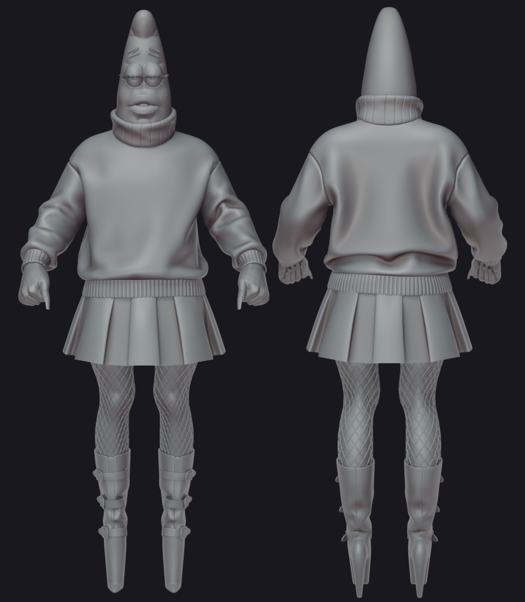
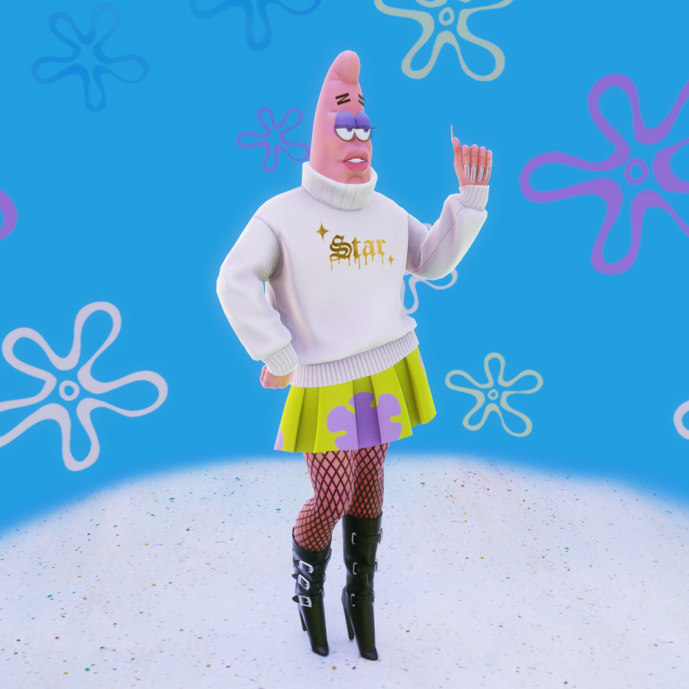
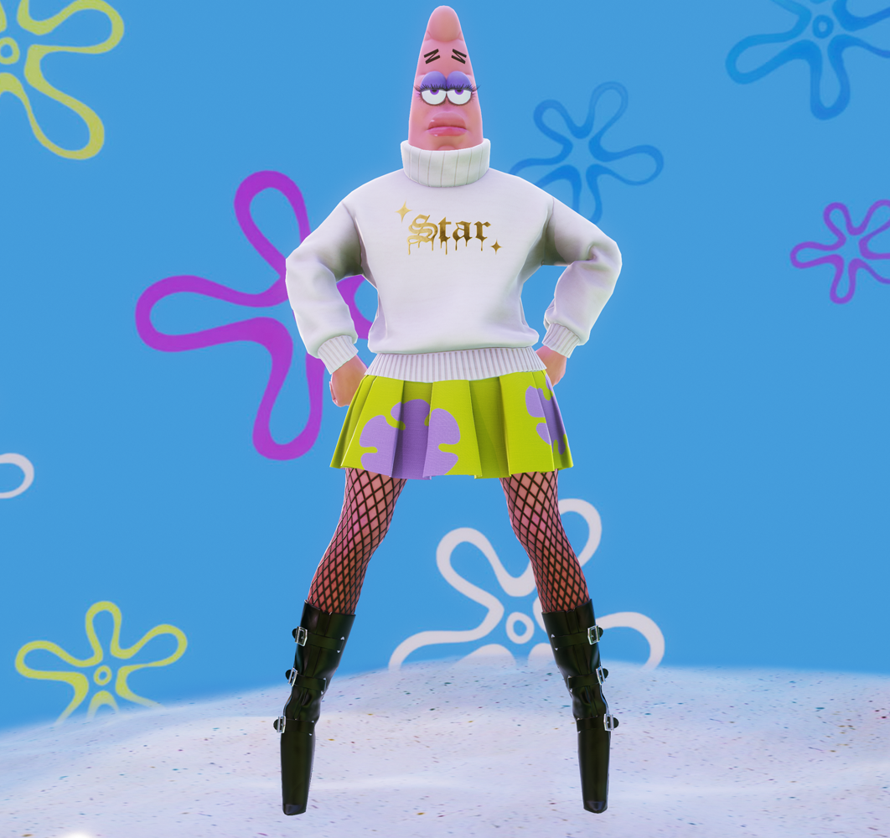
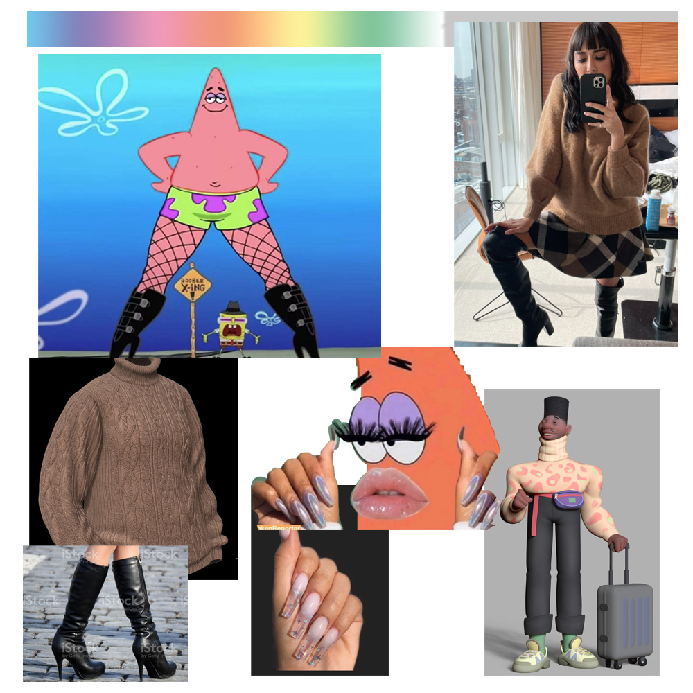

Patrick Star
The goal of this project was to practice character design and anatomy sculpting. All sculpting and modeling were done in Blender. I used Marvelous Designer to simulate the sweater. Texturing was done using Substance Painter.
High Poly Sculpt

Low Poly Renders


Reference Sheet
